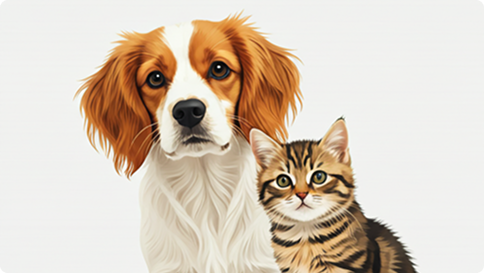
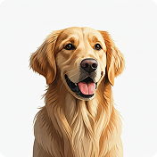
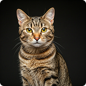
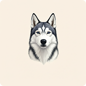
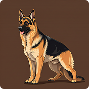
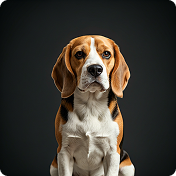
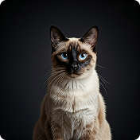

Welcome to Cozy Paws Shelter
Find your new best friend or support our mission to provide care and find loving homes for animals in need.
Meet our Adoptable Animals

Buddy
Friendly and playful

Whiskers
Sweet and cuddly

Luna
Gentle and loving

Rocky
Energetic and loyal

Daisy
Calm and affectionate

Oliver
Curious and adventurous
Our Mission
At Cozy Paws Shelter, our mission is to rescue, rehabilitate, and rehome animals in need. We provide a safe and nurturing environment for animals until they find their forever homes. We also promote responsible pet ownership and community involvement in animal welfare.